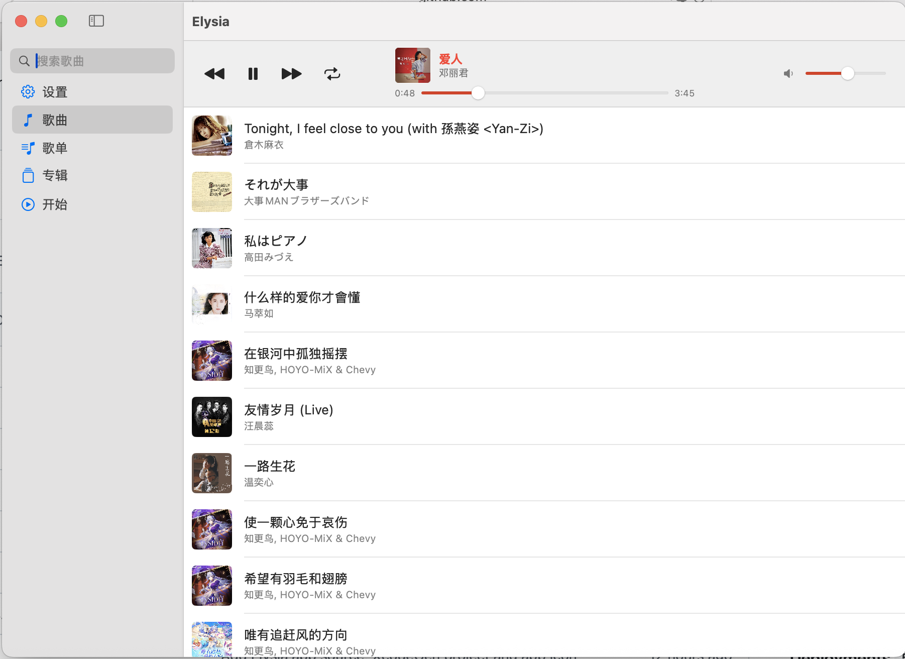
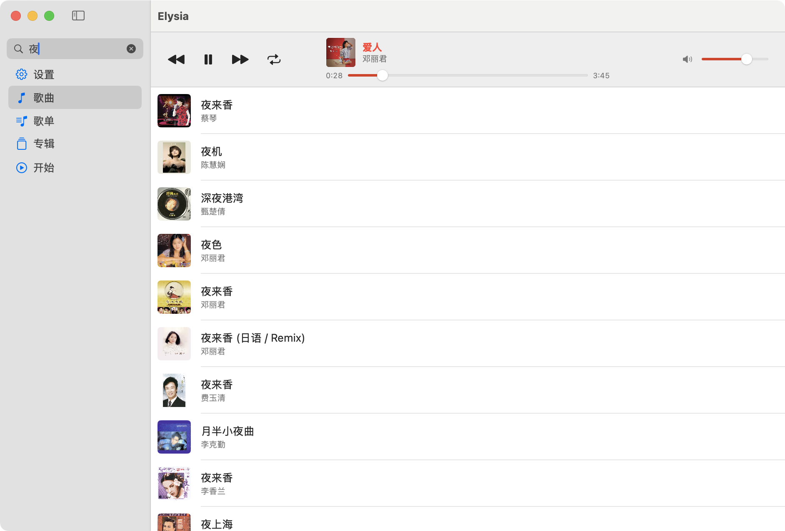
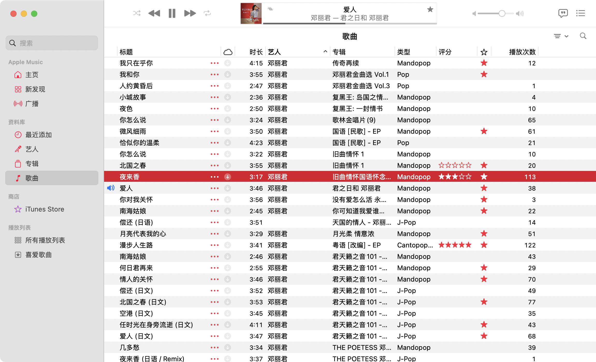
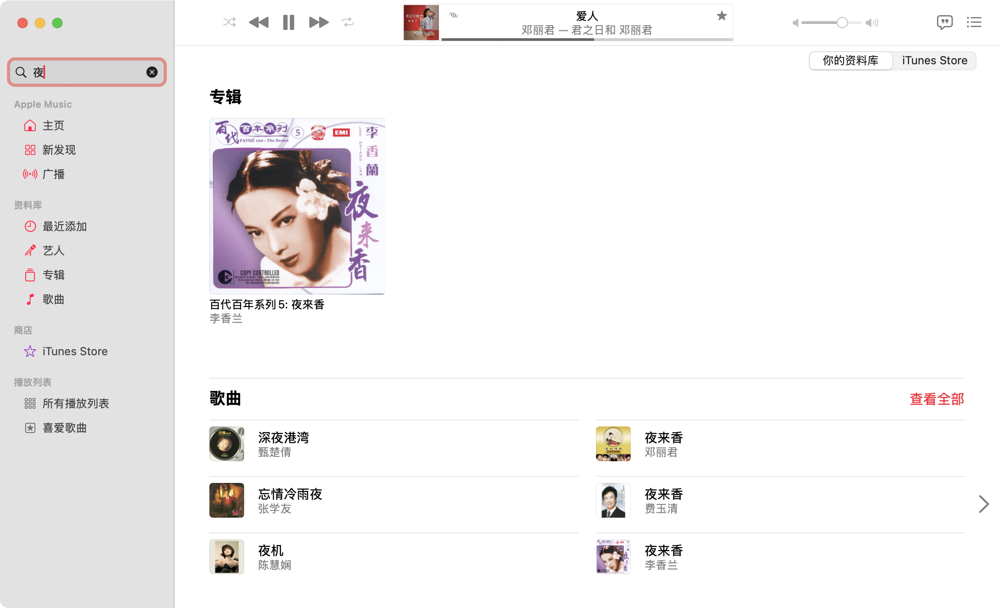

The missing graphical interface of Apple Music
Apple Music 缺失的图形界面
A lightweight front end for Apple Music on macOS. Elysia does not play audio itself: it drives the Music app, so your library, playlists and playback state stay exactly where they are.
macOS 上 Apple Music 的轻量前端。Elysia 本身不播放音频，而是驱动「音乐」App，因此你的资料库、播放列表和播放状态都保持在原处，不会有任何改动。
Elysia
Elysia


Apple Music
Apple Music


Elysia-1.0.6.dmg from the Download Page(Click to open) or the releases page.Elysia-1.0.6.dmg。The released builds are signed but not notarized, which needs a paid Apple Developer account. If macOS reports an unidentified developer, either right-click Elysia in Applications and choose Open, or clear the quarantine flag:
发布的版本已签名，但未公证（公证需要付费的 Apple 开发者账号）。如果 macOS 提示「无法验证开发者」，可在「应用程序」中右键 Elysia 选择打开，或清除下载隔离标记：
$ xattr -dr com.apple.quarantine /Applications/Elysia.app
On first install, or after an update, the song list may not be recognized. Refresh it in Settings → Library. If that still does not work, quit Apple Music and repeat the step above.
首次安装/更新可能无法识别歌单。请在设置→曲库中刷新歌单。若仍然失败，请尝试退出 Apple Music 后重新执行上述操作。
macOS Ventura (13) and above
macOS Ventura (13) 或更高版本
Apple Music with a library. Elysia drives the Music app rather than playing audio itself.
已建立资料库的 Apple Music。Elysia 只是驱动「音乐」App，本身不播放音频。
The Xcode project is generated from project.yml with XcodeGen, so it is disposable:
Xcode 工程由 XcodeGen 依据 project.yml 生成，因此是可以随时丢弃的产物：
$ xcodegen generate $ open Elysia.xcodeproj
To build a signed, universal (arm64 + x86_64) DMG into dmg/:
要在 dmg/ 下生成已签名、兼容 Intel 的通用版 DMG：
$ Scripts/package-dmg.sh
Elysia is released under the MIT License. See LICENSE for the full text.
Elysia 以 MIT 许可发布，完整条款见 LICENSE。